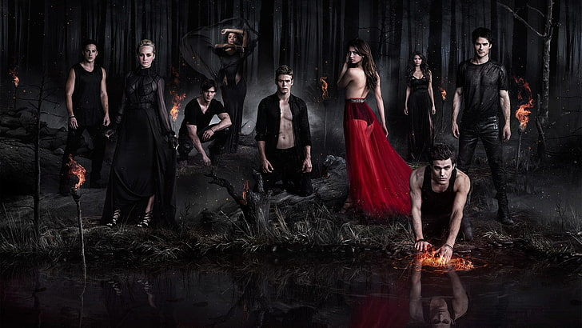

- "Stefan's Theme" – Michael Suby
- "Running Up That Hill" – Placebo - ("Pilot")
- "Currency of Love" – Silversun Pickups ("Brave New World")
- "Hammock" – Howls ("Memory Lane")
- "Sleep Alone (909s in the DarkTimes Mix)" – Bat for Lashes ("Haunted")
- "Bloodstream (Vampire Diaries Remix)" – Stateless ("Founder's Day")
- "We Radiate" – Goldfrapp ("Memory Lane")
- "Obsession" – Sky Ferreira ("Kill or Be Killed")
- "Head Over Heels" – Digital Daggers ("Masquerade")
- "Down" – Jason Walker ("Lost Girls")
- "Beauty of the Dark" – Mads Langer ("You're Undead to Me")
- "Cut" – Plumb ("The Turning Point")
- "All You Wanted" – Sounds Under Radio & Alison Sudol Of A Fine Frenzy ("Let The Right One In")
- "The Fellowship" – Smashing Pumpkins ("Kill or Be Killed")
- "On Melancholy Hill (Feed Me Remix)" – Gorillaz ("Masquerade")
- "1864" – Michael Suby